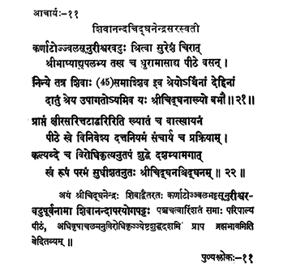

11. आचार्य - 11 - शिवानन्दचिद्धनेन्द्रसरस्वती
कर्णाटोज्ज्वलसूनु ••• बभौ ॥ २१ ॥
प्राप्तं ••• श्रीचिद्धनश्चिद्धनम् ॥ २२॥
The boy Īśvara, son of Ujjvala bhaṭṭa of Karnataka, known as Cidghana, who approached Sureśvara and acquired the knowledge of bhāṣyas etc., having got his (Sureśvara's) responsibility and remaining in the Pīṭha there, this Cidghana spent forty-five years as if Śiva Himself had come there to grant liberation to those who seek liberation.
Revered by the wise, Cighana having placed Vātsyāyāna, the initiated who was hailed as Hari arrived from Milky Ocean, and imparting the precepts he had attained his form, the pure consciousness on the tenth day of the bright fortnight in the month of Jyeṣṭha in the year Virodhikṛt of the Kali era.
